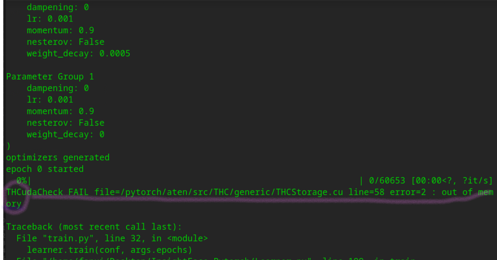
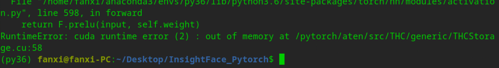
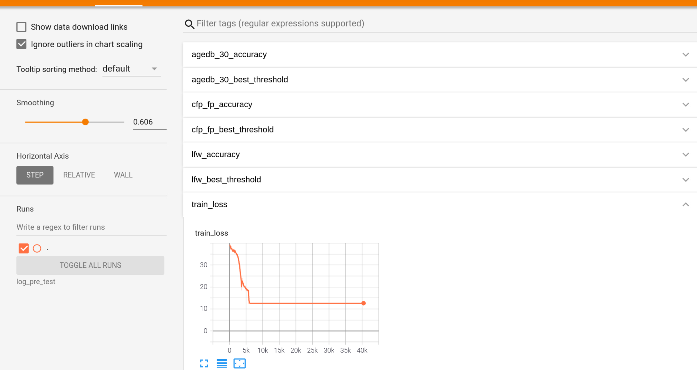
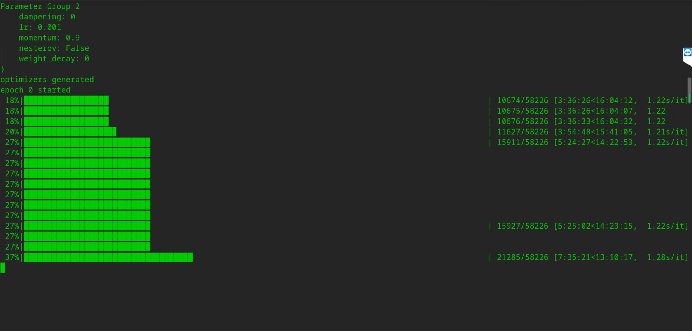
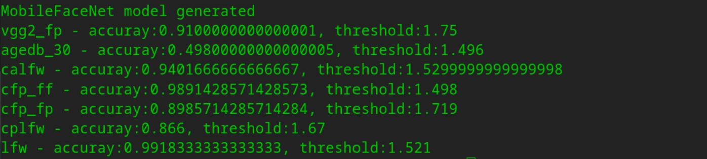
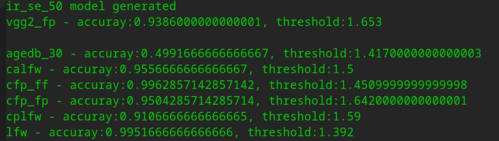
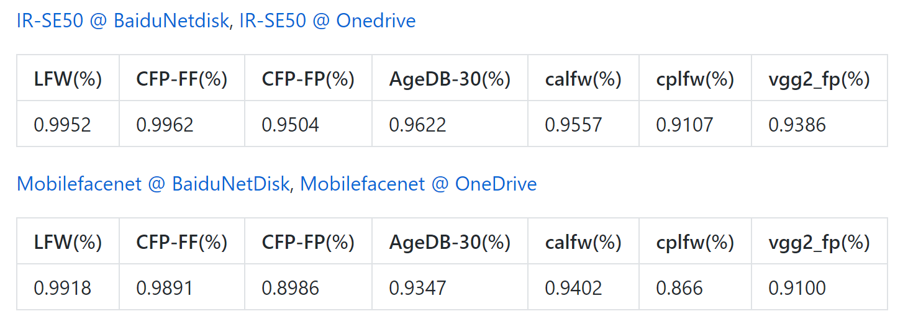

折腾Insightface-PyTorch的辛酸历程
2020年11月25号：配置环境（
python3.5），运行prepare_data.py，成功提取训练集数据到imgs文件夹；但在提取测试集时报错，原因是python3.5及其之前的版本中的Path()都不继承自str类，于是手动给路径包裹了str()，成功提取除二进制格式保存的文件分别至单独的文件夹（blp后缀，不知道这是什么，先放着）；2020年11月26号：运行
python train.py失败，从gihub issue了解到作者用了python3.6，于是重新配环境，试错，期间遇到了各种包装不上以及其他问题（发现作者还用了mxnet用于提取数据）；2020年11月27号：继续配环境，好像是配好了（
python3.6），虽然还会报numpy的错误：ModuleNotFoundError: No module named 'numpy.core._multiarray_umath'，但是并不影响模型的训练；于是开始运行
train.py，会报RuntimeError: cuda runtime error (2) : out of memory at /pytorch/aten/src/THC/generic/THCStorage.cu:58：

网上说是显存爆了，于是查看运行
train.py过程中的显存占用情况：watch -n 0.2 nvidia-smi，其中0.2代表信息刷新频率；经观测，显存确实会满，如下图：

通过网上查询以及大佬的帮助，了解到了造成这一现象的原因：
- 图像分辨率过大（我的训练集是n多个文件夹，每个文件夹包含了同一个人的若干张数量不等的图片）
batch_size过大（设成1也不好使）- 模型过于复杂（参数量过多）
- ……
太难了
2020年11月28号：
按照作者
readme的指引，将模型由之前的[IR-SE50]换成了[Mobilefacenet]，执行python train.py -net mobilefacenet -b 4 -w 4，其中b和w分别代表batch_size和num_workers，终于跑起来了![4.png)
原因：
[Mobilefacenet]比[IR-SE50]更轻量级，所以显存可承受这一点从作者给的预训练好的
[Mobilefacenet]和[IR-SE50]的大小即可看出：前者
4.7M，后者167.2M。在运行完第
0个epoch的10%时，又报错了，原因是没有找到相应的路径，我在workspace文件夹下手动创建了model和save两个文件夹，再次运行python train.py -net mobilefacenet -b 4 -w 4，为了在短时间内检测程序能否跑通，我把训练集的很小的子集拿出来作为训练集，程序得以正常运行（注意：样本量，也就是训练集下文件夹的个数不能太少，否则也会报错）。现在再次训练，在第
0个epoch运行完之后，又报错了：ValueError: Expected more than 1 value per channel when training, got input size [1, 512, 1, 1]网上查了下，是因为样本个数与批量大小的模不为
0，导致最后一个batch的样本量不足一个batch_size，解决办法就是在torch.data.Dataloader中将drop_last设置为True，表示当最后一个batch的样本量不足一个batch_size时直接丢弃。接下来是漫长的等待…
直到14点48分，终于运行结束了，进入
work_space文件夹，在终端打开并输入tensorboard --logdir log，看到了可视化结果，很差，因为只选取了几十个样本来训练。
接下来就可以在全部
6万+样本上训练了，这次的batch_size改为100，很幸运，显存还没爆掉。估算了下，一个
epoch大约需要一天的时间，一共20个，那么需要20天才能跑完？
2020年11月29号：
不跑啦，直接加载作者提供的预训练模型。之所以这样做，是因为训练时间实在是太长（在没有加卡的前提下），而且要跑多次（参数调优），耗不起耗不起。
经测试，在作者提供的两种模型（for特征提取）上跑了7个测试集，结果如下：


除了
agedb_30这个测试集外，在其余测试集上表现都和作者的测试结果一致（作者的训练结果如下）
仔细想了下，是因为
agedb_30数据集被我不小心改了（重新解压了一点，原来的被覆盖了），后续可能会验证下。
over~